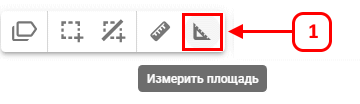
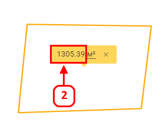
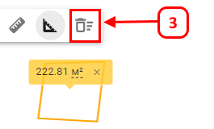

Измерение площади
Инструмент позволяет определить площадь объекта на карте с возможностью изменения единиц измерения.
Выполнение измерения площади
- В правом верхнем углу нажмите кнопку Измерить площадь (1).

- Кликните ЛКМ в трех или более точках на карте. Над курсором будет отображаться подсказка с текущим значением площади (2).

- Сделайте двойной клик ЛКМ в последней точке. Полигон и подсказка изменят цвет, рядом с кнопками линеек появится кнопка Удалить все измерения (3).

- На подсказке единицы измерения подчеркнуты пунктиром. Нажмите на них для переключения между м² и га (при площади от 100 до 1000 м²) либо между га и км² (при площади более 1000 м²).
После выполнения действий на карте отобразится измеренный объект с выбранными единицами измерения.